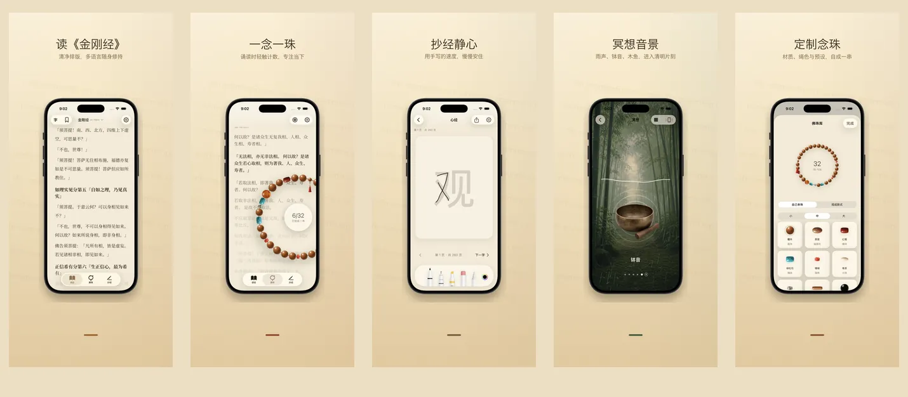
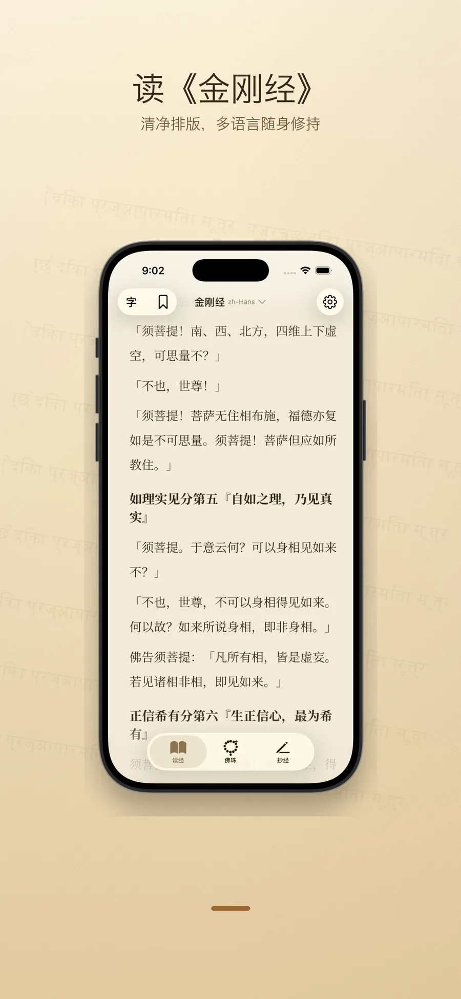
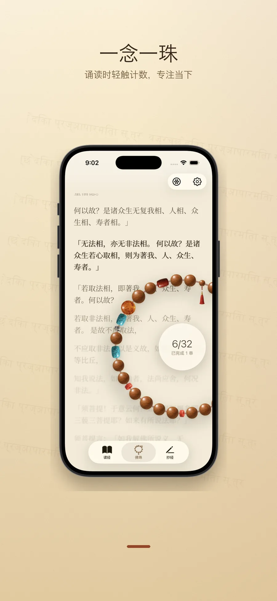
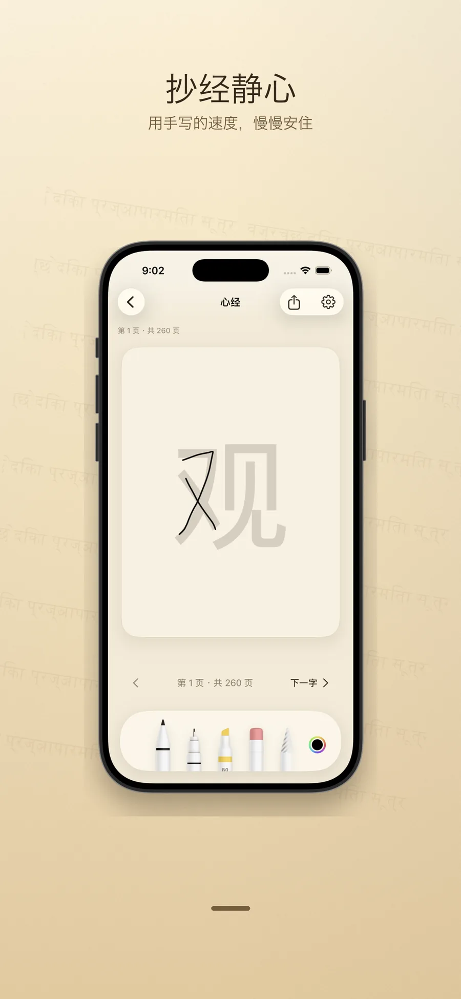
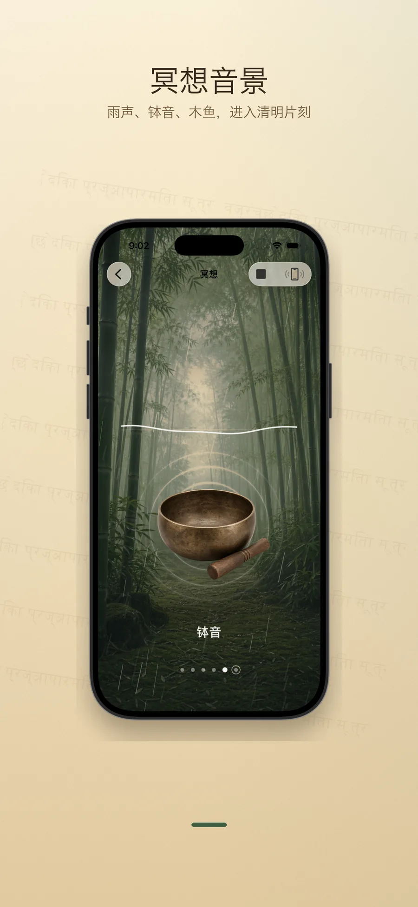
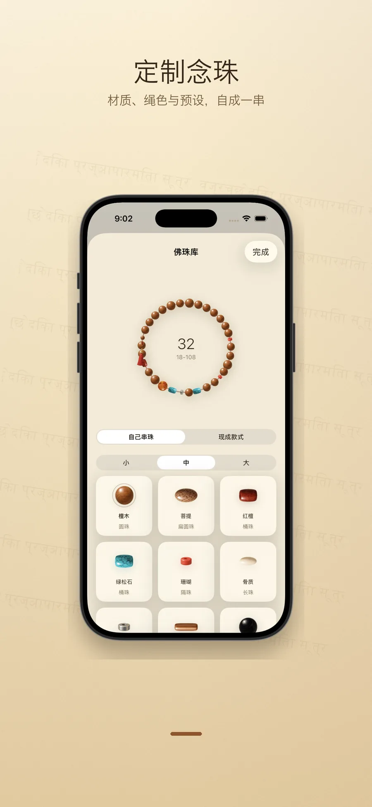

清净排版的金刚经与心经诵读，配合念珠、抄经与冥想音景。
所有内容保存在你的设备里——无账号，无追踪，无广告。
如是我闻 · As I have heard

功能
所有功能围绕"一次完整的修持"而设计。没有打卡、没有徽章、没有干扰。
金刚经（鸠摩罗什 / 玄奘两译）与心经，呈现于书法衬线排版。每段都标注出处、译者、底本年代和版权来源；可切换 17 种界面语言与 9 种经文译本。
真实质感的木珠 / 玉珠 / 菩提子 / 银饰组合，可自由穿珠搭配挂饰。点击计数，108 颗一回向。背景同步显示当前所读经文段落，让念珠与经文合一。
一字一格的清净抄经面板，支持手写笔与触屏。原文以淡字为底，依次描红，完成后可保存成纸张为念。
木鱼、磬、钟、铃铛、雨、竹林——每段音景循环自然衔接，可叠加。无网络要求，离线即可静坐。
每完成一回念珠，可写下当下的回向意图，保存在设备本地。历史记录按时间和经文分类，私密只见于你。
没有注册、没有云端、没有分析。所有偏好、进度、回向、抄经字迹都只存在于你的 iPhone / iPad，由 iCloud 私有数据库托管（如你开启）。
界面
配色与字体都从经书印刷的纸面与刻本汲取，去除一切多余装饰。





支持的语言
开源
app 内每一段经文，都来自公认的公有领域底本（古译者圆寂超过百年，原刻本超过版权保护期），并经人工与 AI 交叉校阅。我们把整理后的版本以 Markdown 公开在 GitHub，自由复用与改进。
隐私
如是 不收集任何个人信息。没有账号、没有分析 SDK、没有第三方追踪。所有进度、念珠回数、回向文字、抄经字迹都只保存在你的设备上。可选的 iCloud 同步使用你私人 iCloud 账户的私有数据库，由 Apple 端到端加密，开发者也无法读取。
app 即将在 App Store 上架，敬请关注。源经文已在 GitHub 公开，可先行查阅。